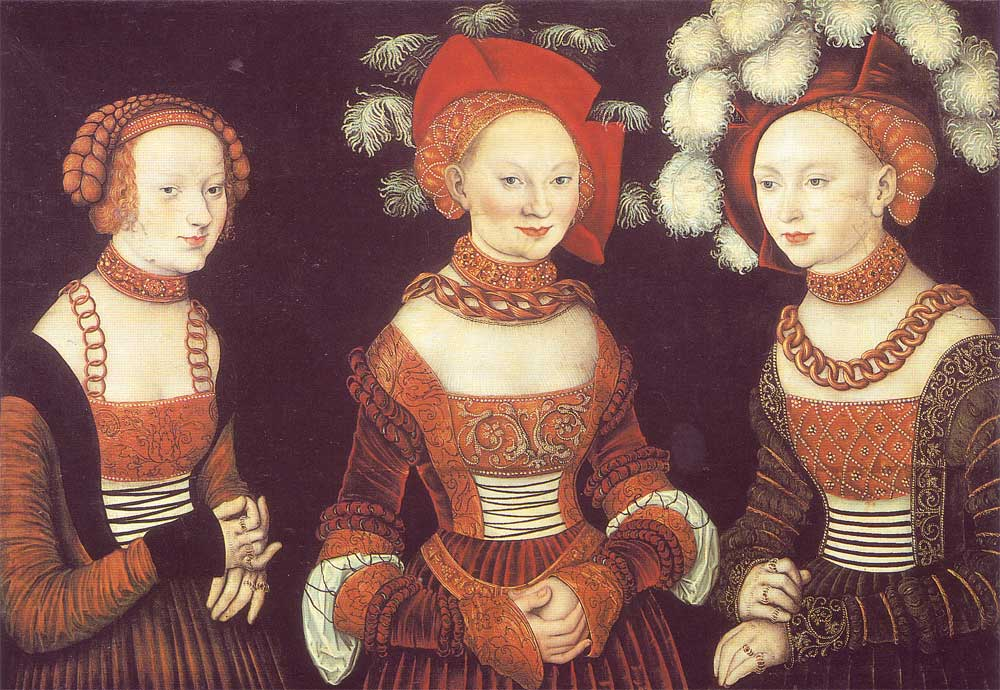

Этот период приходится на 16-начало 17 века. В это время происходит значительное изменение в мировоззрении человека. Люди возвращаются к античным идеалам, начинают придавать меньше значения религии и больше — науке. Красота приобретает особое значение. В костюме это представлено большей свободой самовыражения, экспериментами, экстравагантностью. С развитием торговых путей начинается период все более свободного культурного обмена и мода разных регионов начинает смешиваться и значительно влиять друг на друга.
В этот период активно развивается шелковое ткачество. Ткани покрываются сложными узорами, активно используется бархат, золотая и серебряная вышивка, украшения из драгоценных камней. Особенно в этот период популярны яркие цветовые контрасты.
В этот период в женском костюме появляется корсет, а со временем и ранняя версия кринолина. Верх платья плотно облегает фигуру, широкие юбки создают объем и массивность силуэта. Платье становится более открытым и вместе с тем более подвижным. В деталях одежды появляются дополнительные разрезы: с одной стороны, через них проглядывает белоснежная рубашка, показывая статусность человека, с другой — становится намного проще двигаться.
В женском костюме разрезы зачастую украшают рукава, который в этот период является самостоятельной, отдельной деталью, всевозможно украшается и прикрепляется к платью лентами. Именно рукава платья в этот период показывают социальные различия.
Основными украшениями является кружево и драгоценные камни. Кружевом украшается ворот платья, низ рукавов, а камнями - лиф платья, пояс и прическа.
Форма мужского костюма в первую очередь выражается простотой линий и устойчивостью. В его основе лежали дублет и штаны-чулки. Дублет зачастую был украшен разрезами, а рукава, как и на женском платье, привязывались лентами или пристегивались булавками
В этот период популярность набирают плащи. В течении всего периода их форма усложняется, они начинают делиться на походные и парадные — одни шьются из сукна, а другие из дорогих расшитых тканей. Появляются знаменитые воротники-горгеры, а также набирают популярность различные шляпы — от беретов до широкополых шляп с перьями. Костюм украшают кружевом и драгоценными камнями.